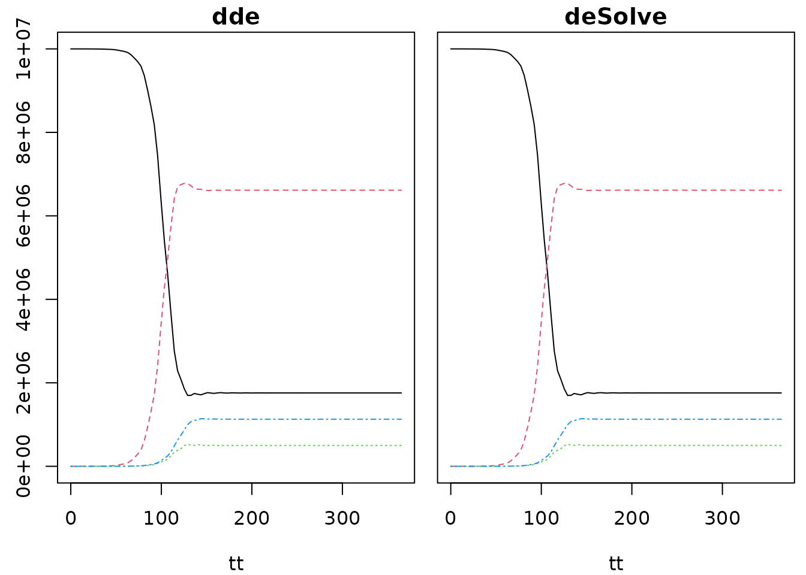

The dde package implements solvers for ordinary differential equations (ODEs) and delay differential equations (DDEs). DDEs differ from ODEs in that the right hand side depends not only on time and the current state of the system but also on the previous state of the system.
This seemingly innocuous dependency can create problems, especially where the delay changes size overtime. In particular, problems where delays are on the order of the step size (vanishing delays) are difficult to solve.
This package is aimed at solving non-stiff ODEs and DDEs with simple delays.
The deSolve package already allows for solving delay differential equations, though the interface and approach differs; see below for similarities and differences.
Ordinary differential equation models
With ODE models you will almost always be better off using deSolve. The deTestSet package also implements Fortran version of the Dormand Prince algorithms here (as deTestSet::dopri5 and deTestSet::dopri853). If you use deSolve then you’ll have the ability to switch between a huge number of different solvers.
The reasons to consider using dde over deSolve/deTestSet would be if you
- are needing to use a DDE equation elsewhere in your package/program
- want to generate dense output for a system for later interpolation
Other than that, I would recommend using deSolve (which is what I do).
For completeness, I will show how below
- R code
- Dense output and interpolation
- C code
- Exotic argument handling
Models implemented in R
Models implemented in R look very similar to deSolve. Here is the Lorenz attractor implemented for dde:
lorenz_dde <- function(t, y, p) {
sigma <- p$sigma
R <- p$R
b <- p$b
y1 <- y[[1L]]
y2 <- y[[2L]]
y3 <- y[[3L]]
c(sigma * (y2 - y1),
R * y1 - y2 - y1 * y3,
-b * y3 + y1 * y2)
}The p argument is the parameters and can be any R object. Here I’ll use a list to hold the standard Lorenz attractor parameters:
p <- list(sigma = 10.0,
R = 28.0,
b = 8.0 / 3.0)
tt <- seq(0, 100, length.out = 50001)
y0 <- c(1, 1, 1)
yy <- dde::dopri(y0, tt, lorenz_dde, p)Here is the iconic attractor
par(mar=rep(.5, 4))
plot(yy[, c(2, 4)], type = "l", lwd = 0.5, col = "#00000066",
axes = FALSE, xlab = "", ylab = "")
The approach above is almost identical to implementing this model using deSolve:
Dense output and interpolation
One of the nice things about the dopri solvers is that they do not need to stop the integration at the times that you request output at:
## n_eval n_step n_accept n_reject
## 26738 4456 4261 195Above, the number of function evaluations (~6 per step), steps, and rejected steps is indicated (a rejected step occurs where the solver has to reduce step size multiple times to achieve the required accuracy). The number of steps here is about 1/10 the number of returned samples. This works because the solver here returns “dense output” which allows it to interpolate the solution between points that it has not visited. This is supported by many of the solvers in deSolve, too.
In contrast with deSolve, the dense output here can be collected and worked with later, though doing this requires a bit of faff.
Specify the history length; this needs to be an overestimate because once the end of the history buffer is reached it will be silently overwritten to return the last steps in history. (This is the behaviour required to support delay models without running out of memory).
yy2 <- dde::dopri(y0, range(tt), lorenz_dde, p, return_minimal = TRUE,
n_history = 5000, return_history = TRUE)With these arguments yy2 is a 3 x 1 matrix, but it comes with a massive “history” matrix":
## [1] 3 1## [1] 17 4261The contents of this matrix are designed to be opaque (i.e., I may change how things are represented at a future time). However, the solution can be interpolated to any number of points using this matrix:
## [1] TRUEDelay differential equation models
Implementing a delay differential equation model (vs an ODE model) means that you refer to the model state at a previous point in time. To do that, you use the the ylag function, of which dde provides interfaces in both R and C.
A model in R
This is a simple SEIR (Susceptible - Exposed - Infected - Resistant) model from epidemiology. Once exposed to the disease, an individual exists in an “Exposed” state for exactly 14 days before becoming “Infected” (you could model this with a series of compartments and get a distribution of exposed times).
seir <- function(t, y, p) {
b <- 0.1
N <- 1e7
beta <- 10.0
sigma <- 1.0 / 3.0
delta <- 1.0 / 21.0
t_latent <- 14.0
Births <- N * b
surv <- exp(-b * t_latent)
S <- y[[1L]]
E <- y[[2L]]
I <- y[[3L]]
R <- y[[4L]]
tau <- t - t_latent
y_lag <- dde::ylag(tau, c(1L, 3L)) # Here is ylag!
S_lag <- y_lag[[1L]]
I_lag <- y_lag[[2L]]
new_inf <- beta * S * I / N
lag_inf <- beta * S_lag * I_lag * surv / N
c(Births - b * S - new_inf + delta * R,
new_inf - lag_inf - b * E,
lag_inf - (b + sigma) * I,
sigma * I - b * R - delta * R)
}The model needs to know how many susceptible individuals there were 14 days ago, and how many infected there were 14 days ago. To get this from the model, we use
to get the values of the first and third variables (S and I) at time tau. Alternatively you can get all values with
or get them individually
The ylag function can only be called from within an integration; it will throw an error if you try to call it otherwise.
What happens when we start though? If time starts at 0, then the first tau is -14 and we have no history then. dde keeps track of the initial state of the system and if a time before this is requested it returns the initial state of a variable. This is going to be reasonable for many applications but will lead to discontinuities in the derivative of your solution (and the second derivative and so on). This can make the problem hard to solve, and it may be preferable to provide your own information (see the deSolve implementation below for one possible way of implementing this).
To integrate the problem, use the dde::dopri function (which by default will use the 5th order method, which is probably the best bet for most problems). You need to provide arguments:
-
n_history: number of history elements to retain. If this is too low then the integration will stop with an error and you can increase it -
return_history: set this toFALSEif you won’t want the history matrix returned; returning it costs a little time and if you don’t want to inspect it it’s better to leave it off
y0 <- y0 <- c(1e7 - 1, 0, 1, 0)
tt <- seq(0, 365, length.out = 100)
yy <- dde::dopri(y0, tt, seir, NULL, n_history = 1000L, return_history = FALSE)
matplot(tt, yy[, 2:5], type="l")
Differences with deSolve
deSolve has a function dede that implements a delay differential equation solver, supporting solutions using lsoda and other solvers. dde differs in both approach and interface and these are documented here for users familiar with deSolve. This section is not needed for basic use of the package, but may be useful if you have used deSolve, especially with compiled or DDE models.
By default the delayed variables are computed using interpolation of the solution using Hermitian (cubic) interpolation along the time dimension. This works surprisingly well, but we found that lsoda and other solvers got confused on some large problems (~2000 equations, 3 delays), possibly because the order of accuracy of the interpolated solution is much lower than the accuracy of the actual problem. This manifested in the solver locking up in a matrix algebra routine involved with approximating the Jacobian of the solution. The package PBSddesolve, based on solv95, takes a similar approach and may have similar limitations.
The dde solver uses the “dense output” that the Dormand-Prince solvers generate; this means that the value of lagged variables can be immediately looked up without any additional interpolation, and that the accuracy of the lagged variables will be the same as the integrated variables.
- more flexible handling of the parameters object (which is not global)
- output only hit using interpolation
- R functions do not return lists, and return output via an attribute (this may change?)
Models implemented in R
Above, I implemented a derivative function for an SEIR model for dde as
function(t, y, p) {
b <- 0.1
N <- 1e7
beta <- 10.0
sigma <- 1.0 / 3.0
delta <- 1.0 / 21.0
t_latent <- 14.0
Births <- N * b
surv <- exp(-b * t_latent)
S <- y[[1L]]
E <- y[[2L]]
I <- y[[3L]]
R <- y[[4L]]
tau <- t - t_latent
y_lag <- dde::ylag(tau, c(1L, 3L)) # Here is ylag!
S_lag <- y_lag[[1L]]
I_lag <- y_lag[[2L]]
new_inf <- beta * S * I / N
lag_inf <- beta * S_lag * I_lag * surv / N
c(Births - b * S - new_inf + delta * R,
new_inf - lag_inf - b * E,
lag_inf - (b + sigma) * I,
sigma * I - b * R - delta * R)
}
<bytecode: 0x7ff72335c348>The implementation using deSolve looks very similar:
seir_deSolve <- function(t, y, parms) {
b <- 0.1
N <- 1e7
beta <- 10
sigma <- 1 / 3
delta <- 1 / 21
t_latent <- 14.0
I0 <- 1
Births <- N * b
surv <- exp(-b * t_latent)
S <- y[[1L]]
E <- y[[2L]]
I <- y[[3L]]
R <- y[[4L]]
tau <- t - t_latent
if (tau < 0.0) { # NOTE: assuming that t0 is always zero
S_lag <- parms$S0
I_lag <- parms$I0
} else {
y_lag <- deSolve::lagvalue(tau, c(1L, 3L))
S_lag <- y_lag[[1L]]
I_lag <- y_lag[[2L]]
}
new_inf <- beta * S * I / N
lag_inf <- beta * S_lag * I_lag * surv / N
list(c(Births - b * S - new_inf + delta * R,
new_inf - lag_inf - b * E,
lag_inf - (b + sigma) * I,
sigma * I - b * R - delta * R))
}The differences are that:
-
deSolverequires that the derivatives are returned as a list, whereasddeuses a numeric vector (see below for details about this) -
deSolverequires that you provide the initial values for the lagged values (and we also need to know what the initial time is too, but I’m assuming that as zero) - The appropriate function for pulling previous values from the history buffer is
deSolve::lagvalue(forddeit isdde::ylag)
Aside from this the code is essentially identical.
To run the model with deSolve, use deSolve::dede which automatically sets up a history buffer of 10000 elements (the mxhist element of the control list alters this).
y0 <- y0 <- c(1e7 - 1, 0, 1, 0)
tt <- seq(0, 365, length.out = 100)
initial <- list(S0 = y0[[1]], I0 = y0[[3]])
yy_ds <- deSolve::dede(y0, tt, seir_deSolve, initial)This produces output that the same as dde:
yy_dde <- dde::dopri(y0, tt, seir, NULL, n_history = 1000L,
return_history = FALSE)
op <- par(mfrow=c(1, 2), mar=c(4, .5, 1.4, .5), oma=c(0, 2, 0, 0))
matplot(tt, yy_dde[, -1], type="l", main = "dde")
matplot(tt, yy_ds[, -1], type="l", main = "deSolve", yaxt="n")
The performance of both packages is fairly similar, taking a few tens of milliseconds to run on my machines
tR <- microbenchmark::microbenchmark(times = 30,
deSolve = deSolve::dede(y0, tt, seir_deSolve, initial),
dde = dde::dopri(y0, tt, seir, NULL, n_history = 1000L,
return_history = FALSE))
tR## Unit: milliseconds
## expr min lq mean median uq max neval
## deSolve 27.64510 29.15170 30.92423 30.85133 31.90844 38.02378 30
## dde 15.12744 15.61554 16.95700 17.00621 18.17972 19.66439 30Models implemented in C
The compiled code interface for deSolve has greatly influenced dde and models implemented in either framework will be similar. Eventually dde may support a fully deSolve compatible interface but for now there are a few differences.
#include <R.h>
#include <R_ext/Rdynload.h>
void lagvalue(double tau, int *nr, int N, double *ytau);
// The parameters are going to be arranged:
//
// t0
// S0, I0
// (b, N, beta, sigma, delta, t_latent)
//
// See below for why t0, S0 and I0 are stored
static double parms[3];
// The standard deSolve initialisation function
void seir_initmod(void (* odeparms)(int *, double *)) {
int N = 3;
odeparms(&N, parms);
}
// The RHS
void seir_deSolve(int *n, double *t, double *y, double *dydt,
double *yout, int *ip) {
// again, hard-coded parameters for now; will change this shortly
// once I get the same working with the dde impementation.
double b = 0.1, N = 1e7, beta = 10.0, sigma = 1.0 / 3.0,
delta = 1.0 / 21.0, t_latent = 14.0;
double Births = N * b, surv = exp(-b * t_latent);
// Because of the way that deSolve implements delays we need to
// store the initial time and values in the parameters vector; if
// the requested time is earlier than the time we started at then
// the initial values need to be used, which we also store in the
// parameters.
double t0 = parms[0];
const double tau = *t - t_latent;
static int idx[2] = {0, 2};
double S_lag, I_lag;
if (tau <= t0) {
S_lag = parms[1];
I_lag = parms[2];
} else {
double ylag[2];
lagvalue(tau, idx, 2, ylag);
S_lag = ylag[0];
I_lag = ylag[1];
}
const double S = y[0], E = y[1], I = y[2], R = y[3];
const double new_inf = beta * S * I / N;
const double lag_inf = beta * S_lag * I_lag * surv / N;
dydt[0] = Births - b * S - new_inf + delta * R;
dydt[1] = new_inf - lag_inf - b * E;
dydt[2] = lag_inf - (b + sigma) * I;
dydt[3] = sigma * I - b * R - delta * R;
}
// This is the interface to deSolve's lag functions. Note that unlike
// dde you are responsible for checking for underflows and providing
// values for underflowed times.
void lagvalue(double tau, int *nr, int N, double *ytau) {
typedef void lagvalue_t(double, int *, int, double *);
static lagvalue_t *fun = NULL;
if (fun == NULL) {
fun = (lagvalue_t*) R_GetCCallable("deSolve", "lagvalue");
}
fun(tau, nr, N, ytau);
}This looks very similar to the dde version above but:
-
parms(or whatever parameters are called) are handled as a global variable that is updated via a model initialisation function, whereas inddethey’re passed in as avoidpointer - We need to keep track of the initial state of the system via passing in
t0and initial conditions forSandI* There is an argumentdouble *youtfor additional output variables (of length*ip; inddethese are handled via a separate function. - The lagvalue function must be explicitly defined (which requires loading some R-related headers (in
ddethis is achieved by including<dde/dde.h>and<dde/dde.c>.
Apart from these details, the model definition should appear very similar.
initial <- c(0.0, y0[[1]], y0[[3]])
zz_ds <- deSolve::dede(y0, tt, "seir_deSolve", initial,
initfunc = "seir_initmod", dllname = "dde_seir_ds")
zz_dde <- dde::dopri(y0, tt, "seir", numeric(), dllname = "dde_seir",
n_history = 1000L, return_history = FALSE)Check that outputs of these models are the same as the R version above:
## [1] TRUE## [1] TRUEHere, the timings are even closer and have dropped from on the order of 20 milliseconds to 0.5 milliseconds; so we’re getting a ~40x speed up from using compiled code.
tC <- microbenchmark::microbenchmark(
deSolve = deSolve::dede(y0, tt, "seir_deSolve", initial,
initfunc = "seir_initmod", dllname = "dde_seir_ds"),
dde = dde::dopri(y0, tt, "seir", numeric(), dllname = "dde_seir",
n_history = 1000L, return_history = FALSE))
tC## Unit: microseconds
## expr min lq mean median uq max neval
## deSolve 566.298 613.7030 706.9760 630.508 735.355 4148.716 100
## dde 529.846 545.2495 593.2688 558.430 610.907 902.567 100The difference in speed will tend to increase as the models become larger (in terms of numbers of equations and parameters). On the other hand, constructing large models in C can be a hassle (but see odin for a possible solution).
You can extract a little more performance by tweaking options to dde::dopri; in particular, adding return_minimal = TRUE will avoid transposing the output, binding the times on, and (if given) avoiding binding output variables. These costs may be nontrivial with bigger models, though the cost of running a larger model will likely be larger still. Previous version of R suffered from a large cost of looking up the address of the compiled function (Windows may still take longer to do this than macOS/Linux). In that case, use getNativeSymbolInfo("seir") and pass that through to dopri as the func argument.
ptr <- getNativeSymbolInfo("seir")
tC2 <- microbenchmark::microbenchmark(
deSolve = deSolve::dede(y0, tt, "seir_deSolve", initial,
initfunc = "seir_initmod", dllname = "dde_seir_ds"),
dde = dde::dopri(y0, tt, "seir", numeric(), dllname = "dde_seir",
n_history = 1000L, return_history = FALSE),
dde2 = dde::dopri(y0, tt, ptr, numeric(), n_history = 1000L,
return_history = FALSE, return_minimal = TRUE))
tC2## Unit: microseconds
## expr min lq mean median uq max neval
## deSolve 563.557 611.0640 715.7090 619.3525 740.4455 3967.837 100
## dde 527.615 544.0110 620.1472 559.8385 669.1040 1113.606 100
## dde2 495.562 502.4425 558.7047 513.0925 562.8285 1126.716 100